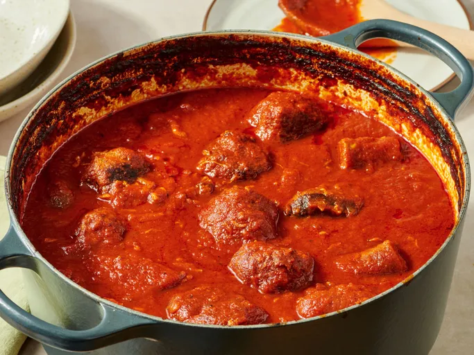

Italian Sauce
Fill your kitchen with this incredible recipe of Italian Sauce that will fill your kitchen with amazing aromas and it will make your family wonder when dinner's going to be ready.
This recipe is full of rich, sweet tomato flavor, subtle herbs, and savory, tender meat that's cooked right in the sauce. Ladle it over your favorite pasta and serve with buttery garlic bread